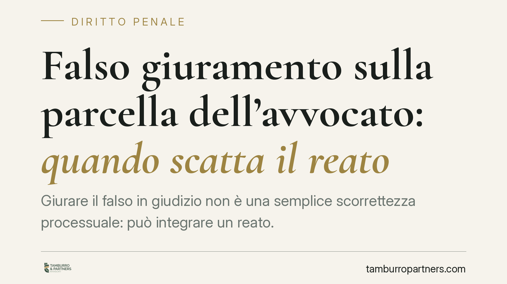

Falso giuramento sulla parcella dell'avvocato: quando scatta il reato
Giurare il falso in giudizio non è una semplice scorrettezza processuale: può integrare un reato. È il caso, ricorrente nel contenzioso sulle parcelle, di chi nega di aver ricevuto un pagamento o afferma il contrario di quanto realmente avvenuto. Analizziamo la fattispecie del falso giuramento della parte, la sua struttura e i suoi limiti applicativi.

Il fatto tipico
Nel contenzioso tra avvocato e cliente sul pagamento della parcella capita che una delle parti, chiamata a giurare, affermi in giudizio circostanze non veritiere sull'avvenuto (o mancato) versamento del compenso. È una situazione che va oltre la mera scorrettezza processuale: quando la falsità riguarda il contenuto del giuramento decisorio, la condotta può assumere rilievo penale.
È utile distinguere due piani. Sul piano civilistico, la parte che gioca con la verità processuale rischia di soccombere e di subire le conseguenze economiche del giudizio. Sul piano penale, invece, la falsità del giuramento è una fattispecie autonoma di reato, che prescinde dall'esito della causa.
Inquadramento normativo
L'art. 371 del codice penale punisce il falso giuramento della parte: chi, come parte in un processo civile, giura il falso è punito con la reclusione. La norma tutela un bene specifico, cioè l'affidabilità del giuramento come prova legale.
Occorre chiarire di quale giuramento si parli. Il codice civile disciplina il giuramento all'art. 2736 c.c., distinguendo tra giuramento decisorio — deferito da una parte all'altra per farne dipendere la decisione totale o parziale della causa — e giuramento suppletorio, deferito d'ufficio dal giudice per completare la prova. Il deferimento del giuramento decisorio trova disciplina processuale negli artt. 233 e ss. c.p.c.
La distinzione non è formale. Secondo l'orientamento consolidato, il reato di falso giuramento della parte ex art. 371 c.p. si configura in relazione al giuramento decisorio: è quello che, una volta prestato, vincola il giudice e chiude la questione. Proprio perché fa da prova legale, la sua falsità offende direttamente la funzione probatoria, e da qui deriva il particolare disvalore penale della condotta.
Perché la falsità pesa
Il giuramento decisorio è una prova legale: il giudice non può valutarla liberamente, ma deve prenderla per vera. Chi giura il falso non inganna quindi solo la controparte, ma altera il meccanismo stesso di accertamento dei fatti. È questa la ragione per cui l'ordinamento riserva alla condotta un trattamento sanzionatorio autonomo rispetto alle ordinarie vicende del processo.
Con riguardo alla causa di non punibilità per particolare tenuità del fatto (art. 131-bis c.p.), va ricordato che essa richiede sempre una valutazione in concreto dell'offesa. Nelle pronunce che hanno affrontato il tema, la tenuità è stata esclusa valorizzando proprio l'offesa alla funzione probatoria: la falsità che colpisce una prova legale difficilmente si presta a essere ricondotta a un'offesa minima. Resta però una valutazione caso per caso, non un'esclusione automatica: la norma non ammette letture assolute.
Implicazioni pratiche
Per chi è parte in un giudizio civile sul pagamento di somme — parcelle comprese — il punto è concreto. Se viene deferito il giuramento decisorio, la dichiarazione resa non è un adempimento burocratico: è una dichiarazione dal peso probatorio pieno e dalle possibili conseguenze penali.
Anche una difformità dal vero apparentemente contenuta può risultare rilevante, perché ciò che conta è l'alterazione del fatto oggetto del giuramento, non la sua entità economica. Prima di prestare il giuramento è quindi essenziale avere piena contezza della realtà documentale della propria posizione.
Cosa fare in concreto
- Ricostruite la documentazione dei pagamenti: conservate e reperite ricevute, quietanze, estratti conto e contabili di bonifico prima di qualsiasi dichiarazione in giudizio.
- Verificate la corrispondenza tra dichiarazione e documenti: confrontate ciò che vi accingete a giurare con le prove disponibili, comprese date e importi.
- Valutate l'alternativa alla prestazione del giuramento: la parte cui è deferito il giuramento può, nei casi previsti, riferirlo alla controparte anziché prestarlo.
- Distinguete il piano civile da quello penale: una condotta processuale infelice può avere effetti ben oltre la singola causa.
- Non improvvisate la dichiarazione in udienza: il contenuto del giuramento va preparato con attenzione, sulla base dei fatti realmente accertabili.
Conclusione
Il giuramento decisorio è uno strumento potente proprio perché vincola il giudice. La stessa forza che lo rende decisivo lo rende anche pericoloso per chi lo utilizza in modo distorto. La linea tra scorrettezza processuale e reato è più sottile di quanto sembri, e passa dalla verità di ciò che si dichiara.
_Contributo informativo a cura di Tamburro & Partners - Avv. Giuseppe Tamburro. Non costituisce parere legale._
Ogni condominio ha una storia a sé.
Se gestisci un'amministrazione e vuoi un confronto su una specifica questione condominiale, scrivi allo studio. Ti rispondiamo entro un giorno lavorativo.